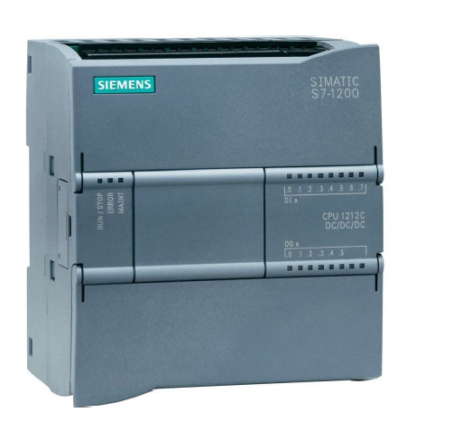
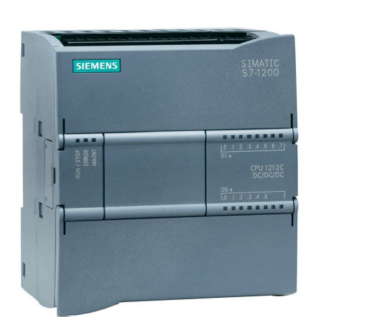

BUT 1 – Première année
Une année tronc-commun qui permet de découvrir les bases des grands domaines du génie électrique et informatique industrielle. On explore l'électronique, l'informatique, l'électrotechnique et l'automatisme pour acquérir des connaissances générales avant de se spécialiser.
Projet : Robot suiveur de ligne
Objectif : Concevoir et réaliser un robot autonome capable de suivre une ligne au sol.
Étapes du projet :
- Conception électronique sur KiCad
- Calculs et dimensionnement : Choix des composants
- Fabrication, brasage & Tests des cartes
- Assemblage des cartes, moteurs, capteurs
- Programmation en C++ sur microcontrôleur
- Validation & optimisation : tests sur parcours, réglages PID éventuels

SAÉ Armoire Électrique Industrielle
Objectif : Câbler et mettre en service une armoire électrique industrielle complète à partir d'un schéma réalisé en théorie.
Étapes du projet :
- Conception du schéma électrique
- Choix du matériel et implantation des composants
- Câblage de l'armoire
- Habilitation électrique
- Dépannage, tests, mesures et vérifications
- Mise sous tension

BUT 2 – Deuxième année
Approfondissement des connaissances avec des spécialisations progressives (Automatisme et informatique industrielle). Mise en pratique des concepts à travers des projets plus complexes et des stages en entreprise.
Projet : Programmation de différentes maquettes
Objectif : Programmer et gérer différentes maquettes contenant différents automates avec différents protocoles de communications.
Étapes du projet :
- Étude des différents automates et leurs architectures
- Apprentissage des protocoles de communication (Modbus, CAN, Profibus)
- Programmation en langage ladder et structuré
- Configuration des maquettes et connexions réseau
- Tests de communication inter-automates
- Optimisation et documentation des solutions

Projet : IHM et Supervision
Objectif : Concevoir et développer une interface homme-machine et un système de supervision pour monitorer et contrôler les processus industriels.
Étapes du projet :
- Configuration de Kepware pour créer un serveur OPC et récupérer les variables de l'automate.
- Création d'une supervision Panorama connectée au serveur OPC.
- Réalisation d'une IHM avec Vijeo Designer.
- Liaison des écrans et de la supervision aux variables automates.
- Découverte pratique de la communication industrielle et des interfaces.

BUT 3 – Troisième année
Spécialisation en automatisme robotique et informatique industrielle.
Système Cobotique & Vision Industrielle


 

- Réaliser une analyse fonctionnelle d'un système cobotique
- Mettre en œuvre des automates S7-1200 / S7-1500 pour coordonner le process
- Piloter un variateur pour contrôler la bande transporteuse
- Exploiter des capteurs IO-Link et superviser les données via Moneo
- Lire / écrire des informations sur tags RFID
- Configurer une communication PROFINET multi-équipements